First run, screen by screen
Every screen a freshly installed instance shows, in the order it shows them, with an example for each field and a sentence on what that entry causes the product to do. Not what the label says. What the entry does.
The worked example throughout is a UGREEN NAS running the canonical Docker Compose deployment, pulling finished backup archives off two VPS over SFTP. The first run configures the first of the two. The second one is an ordinary backup set added afterwards.
Every screenshot on this page was taken against ui/shared's development server, whose API is the in-memory fixture in src/api/mock.ts. The component tree, the layout and every word of copy are the real product's. The data is not: fingerprints, key ids and anything numeric are fixtures.
They were deliberately not taken from a real instance. Completing this flow claims the administrator account and writes a configuration file, and the enrolment token that opens it is single use, so a screenshot run against a live deployment would finish somebody's setup for them. Re-shooting them is one command.
Both are open and both are on screens below. #274: an expired enrolment token reports “The administrator account could not be created”, which blames your password for a problem with the link. #275: the wizard draws a “Cancel and return to backup sets” control during first run that cannot do anything. Each is called out where it appears.
Before you open a browser
Three things have to be true, and none of them is checked for you in a way that produces a useful message if it is not.
- The host directories exist and the container can write them. The runtime image is distroless with no root step, and a bind mount does not chown its source, so create the state, backup and config directories on the NAS and chown them to the container's uid and gid yourself. The config directory is mounted as a writable directory, not a read-only file, which is exactly what lets setup write
config.yamlinto it. - The config directory is empty. Setup is a one-time door. If anything is already at
/etc/backup-manager/config/config.yaml, however it got there, the first-run write refuses rather than overwriting it, and the instance serves the ordinary application instead of the setup flow. - The remote server has an account to pull from. A dedicated, shell-less, chrooted SFTP account is what the project's own SSH setup guide recommends, and it has a consequence worth knowing before you get to step 5: against that account shape a remote checksum cannot be computed at all, so verification is transfer verification, not a remote-versus-local hash comparison.
The screens
The enrolment link in the log
There is no screen for this one. On first start, before any browser is involved, the engine prints a one-time enrolment secret to its own stdout. Read it from the engine container, not the web one:
docker compose logs rclone-manager | grep enrollWhat comes back looks like this:
backup-manager: no administrator account exists yet. Open
http://localhost:8080/enroll?token=<a long random string> to create one
(valid 30 minutes, single use).| Thing | Value | What it means for you |
|---|---|---|
| The host in the link | localhost:8080 | The shipped Compose file sets PUBLIC_BASE_URL to http://localhost:${LISTEN_PORT}, and localhost only resolves correctly if you open the link on the NAS itself. From a laptop, swap the host for the NAS address and keep the token exactly as printed. Set PUBLIC_BASE_URL in .env to your NAS address to get a link that is correct next time. |
| The token | 24 random bytes, base64url | Reaching the port is deliberately not sufficient to claim the administrator account. The token is what proves you can read the container's own log, which is the thing an attacker on the LAN cannot do. |
| Valid 30 minutes | hard expiry | After 30 minutes the token stops working and enrolment fails, currently with a message that does not say so. See the callout on the next screen. |
| Single use | consumed atomically | It cannot succeed twice. A restart before enrolment completes mints a fresh token and silently invalidates the old one, so an old link in your scrollback is dead even inside its 30 minutes. |
The notice is printed only while enrolment is still open. Nothing in the log means an administrator already exists, and the answer is to sign in rather than to hunt for a token. Restarting the engine mints a new token only when no administrator has enrolled.
Create the administrator
Open the link. This account manages Backup Manager and nothing else. It is not your NAS operating-system account, and it is stored on the NAS as an Argon2id hash in /data/state/local-auth.json, in the same volume as the lifecycle journal, so it survives a container restart without a second volume.
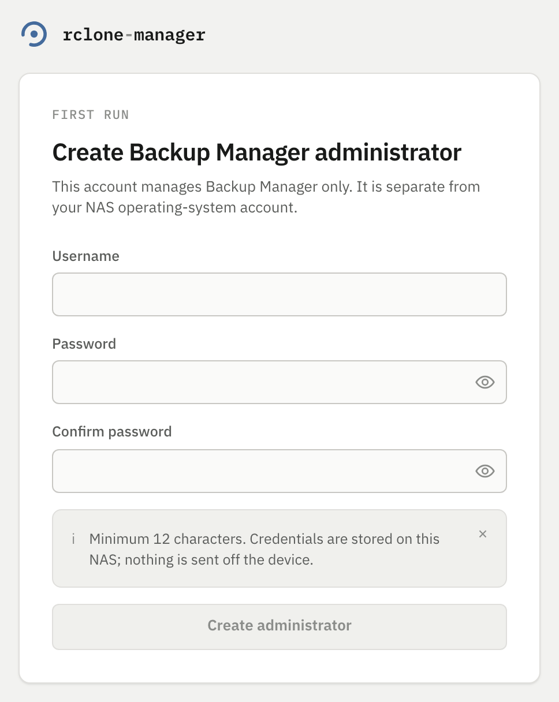
| Field | Example | What the entry does |
|---|---|---|
| Username | nas-admin | Becomes the single administrator record for this instance. Enrolment is one-shot and irreversible: once this record exists, the enrolment route is closed for good and there is no second account and no self-service way back. Pick something you will recognise in a log line. |
| Password | a passphrase of 12 characters or more | Hashed with Argon2id and written to the state volume. The plaintext is never stored and never leaves the NAS. Twelve characters is a floor the form enforces, not a recommendation. |
| Confirm password | the same again | Client-side only. You can change this password later from Settings, but that asks for the current one: there is no reset for a password nobody knows, so a typo you confirm twice is a reinstall. That is the reason this field exists at all. |
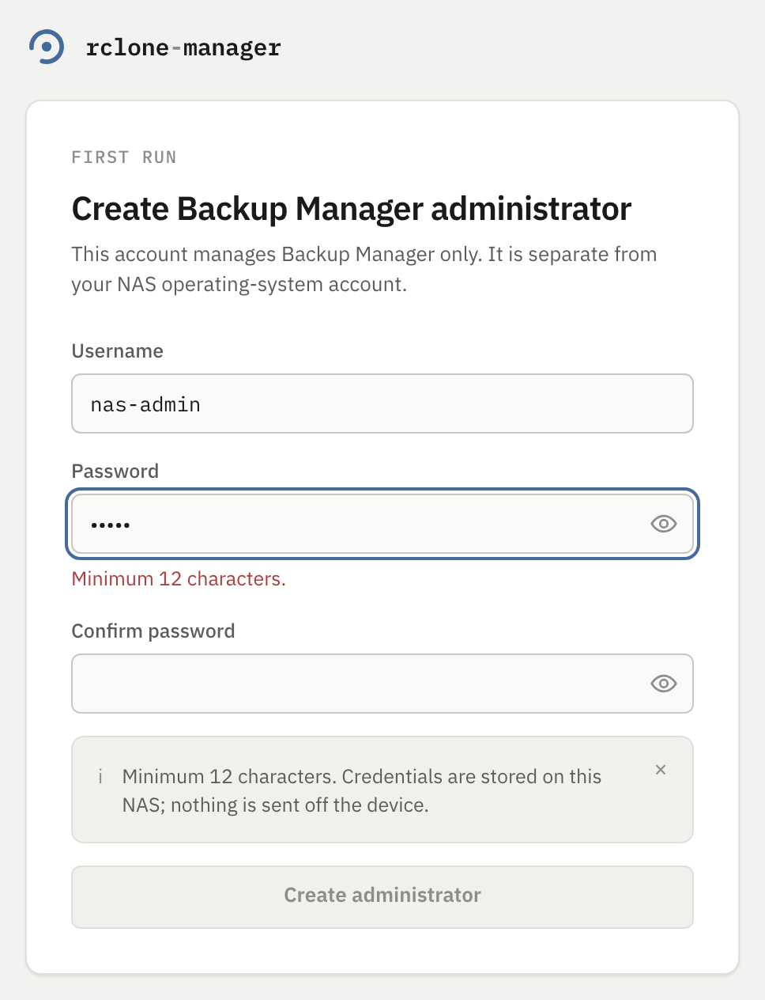
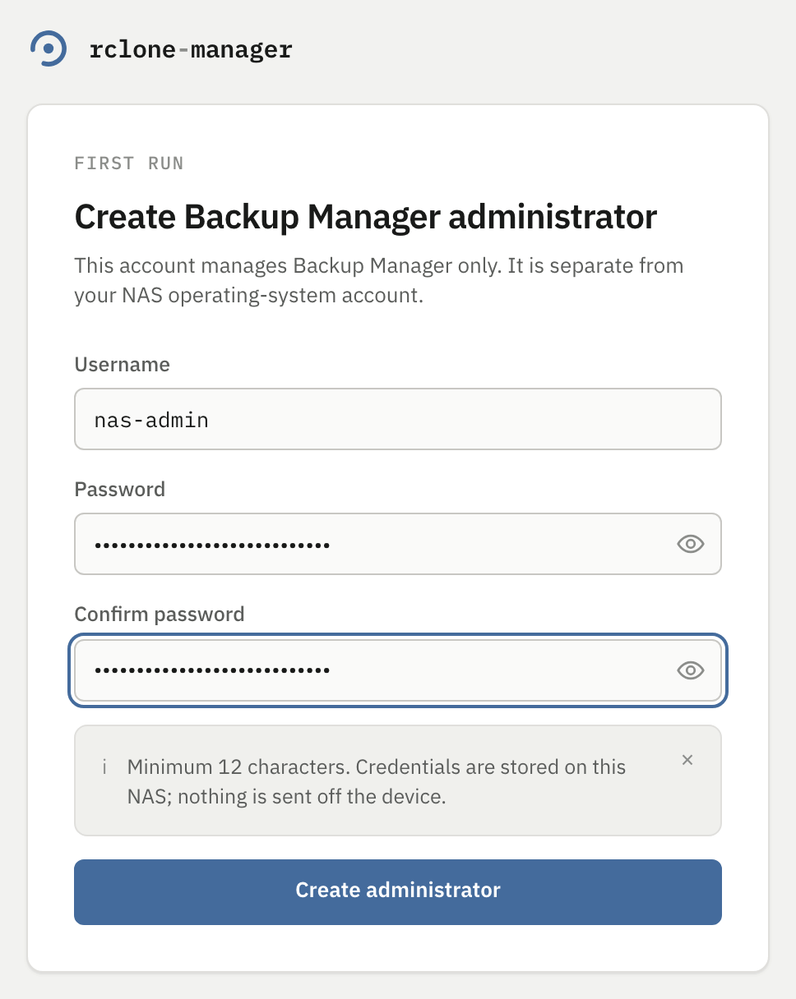
Read that message as the token, not the password. When the enrolment secret is missing, expired or already used, the API answers BOOTSTRAP_TOKEN_INVALID with “missing, expired or already-used bootstrap token”, and the page currently discards that and shows “The administrator account could not be created” instead. Trying a different password cannot help.
The fix is a fresh token: restart the engine container, read the new link out of the log, and open that one. If the token was already used, an administrator exists and you should sign in instead.
The correlation id shown on that error, cid_enroll, is a hardcoded literal and does not match the one in the response, so it will not find anything in a log. This is #274 and it is being fixed.
Error banners in this build render their leading glyph as the literal six characters \u2715 rather than as a cross. It is four sites of a JSX escape used as element content instead of inside a string, tracked as #257, and it means nothing about the error you are reading.
Step 1: Source
Enrolment drops you straight here. The setup surface is the ordinary add-backup-set wizard with a short explanation above it, deliberately rather than a separate flow, because the questions are the same either way and a second parallel form would be a second place for them to drift.
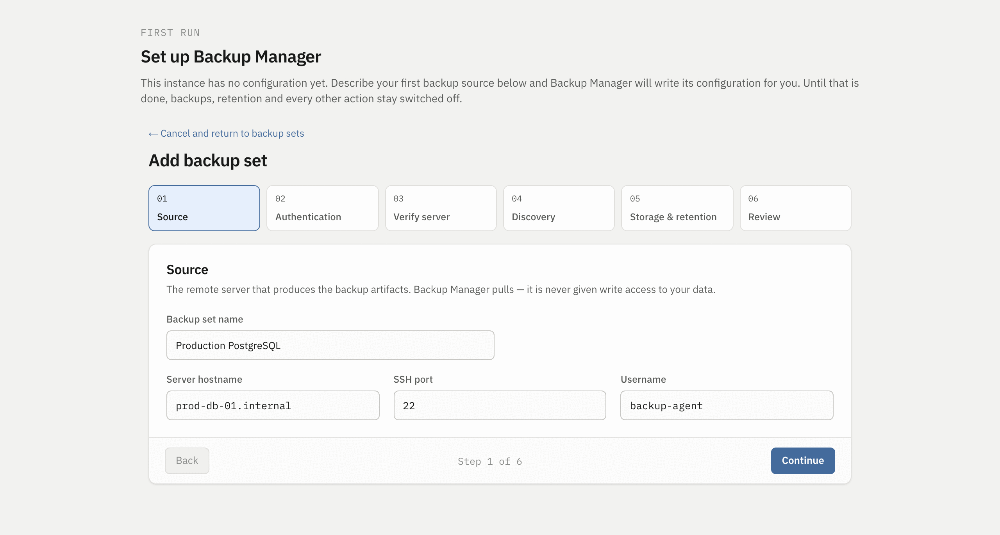
“Cancel and return to backup sets” does nothing during first run. It changes the address bar to /sets and the page stays where it is, because which surface renders is decided by whether the instance is configured, not by the route. There is nowhere to cancel to: there is no backup-sets list until there is a configuration. This is #275, and the fix is to stop drawing the control in this mode.
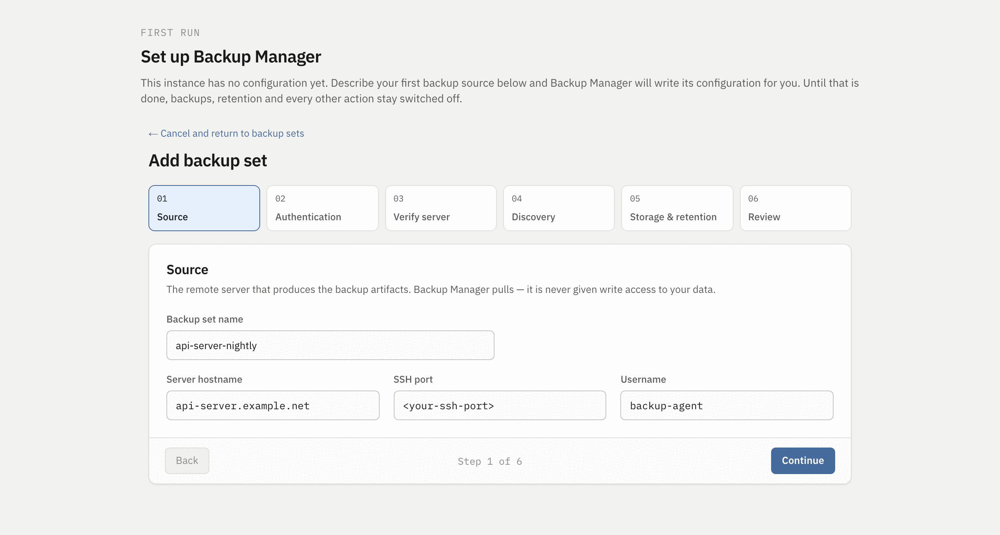
| Field | Example | What the entry does |
|---|---|---|
| Backup set name | api-server-nightly | Becomes the backup set's id in config.yaml, and half of its permanent identity: a backup set is identified by source plus set, never by the set name alone. It also becomes part of a filename on disk, because the trust anchor from step 3 is written to known_hosts.d/<source>_<name>_known_hosts, so keep it to something filename-shaped. |
| Server hostname | api-server.example.net | The VPS this NAS pulls from. Editing it after you have trusted a host key on step 3 revokes that trust, deliberately, so that trusting server A cannot leave server B showing as trusted. |
| SSH port | your own port | Written to remote.port. Anything that is not a number becomes 22. The wizard converts this field with a numeric coercion that falls back to 22, silently, so a typo here does not produce an error, it produces a connection attempt against the wrong port. |
| Username | backup-agent | The SFTP account on the remote server. This account only ever needs read access plus the right to delete the artifacts it produced, because the manager pulls and then removes the source. It is never given write access to your data. |
Because a non-numeric port silently becomes 22, and because 22 will usually be reachable on a VPS, a mistyped port can produce a wizard that appears to work while pointing somewhere you did not intend. Check remote.port in the written config.yaml once setup finishes.
Step 2: Authentication
Three options are offered. Only one of them can save.
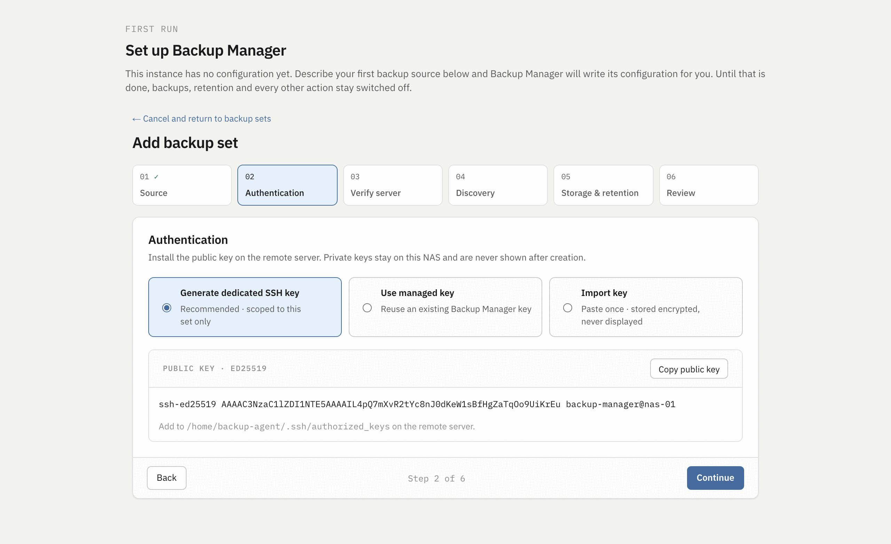
| Choice | State today | What it does |
|---|---|---|
| Generate dedicated SSH key | not implemented | Marked “Recommended” and selected by default, but saving with it selected fails with “Generating a key on save isn't available yet”. The public key it displays is a hardcoded example, so do not install it on your server. |
| Use managed key | not implemented | The dropdown lists example entries. Saving with it selected fails the same way. |
| Import key | works | The only choice that produces a saveable configuration. Paste the private key of an account you have already installed the matching public key for. |
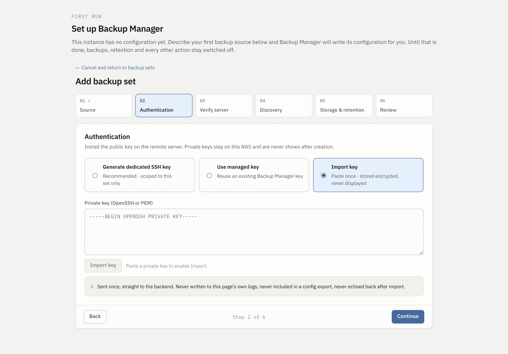
Paste an unencrypted OpenSSH or PEM private key and press Import key. What happens then is worth knowing precisely, because it is the only moment key material exists anywhere near a browser:
- The key goes straight to the backend in one call. The page discards its own copy the instant that call returns and holds only the returned id and fingerprint from then on.
- The backend validates it as a real unencrypted private key, then writes it to
<config dir>/ssh_keys/<id>with mode 0600. The configuration file only ever names that path. There is no field in the schema for raw key bytes at all, by design, so a key can never end up inline inconfig.yaml. - Spellcheck, autocomplete, autocorrect and autocapitalise are all switched off on that textarea, because browser “enhanced” spellcheck sends the contents of an unmasked text field to a third-party service as you type.
- It cannot be shown again. Replacing it means pasting a different key.
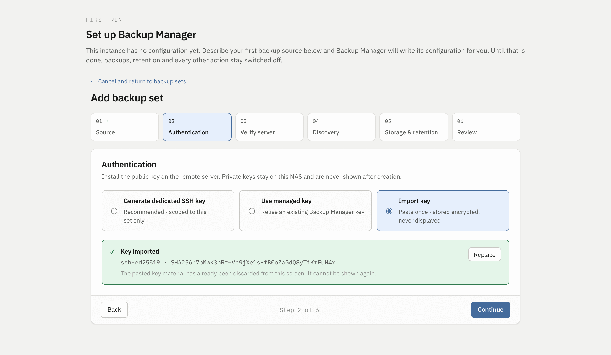
ssh-keygen -lf on your own copy of the key before continuing.Step 3: Verify server
This step fetches the remote server's host key and asks you to trust it. It is the step people click through, and it is the one that decides whether a future man-in-the-middle is caught or ignored.
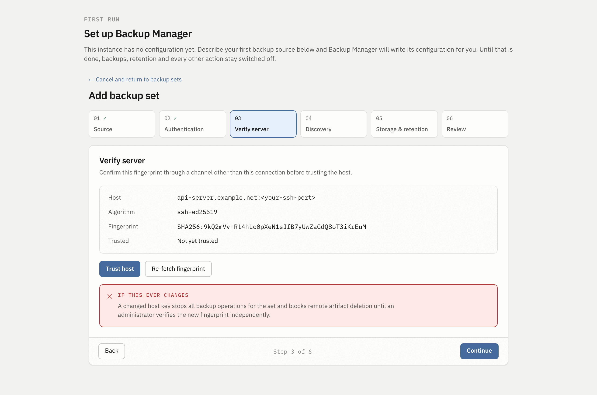
The instruction on the screen is the whole point of the step: confirm this fingerprint through a channel other than this connection. Run ssh-keygen -lf /etc/ssh/ssh_host_ed25519_key.pub on the VPS itself, over a session you already trust, and compare. A fingerprint that only ever came down the connection you are trying to authenticate proves nothing.
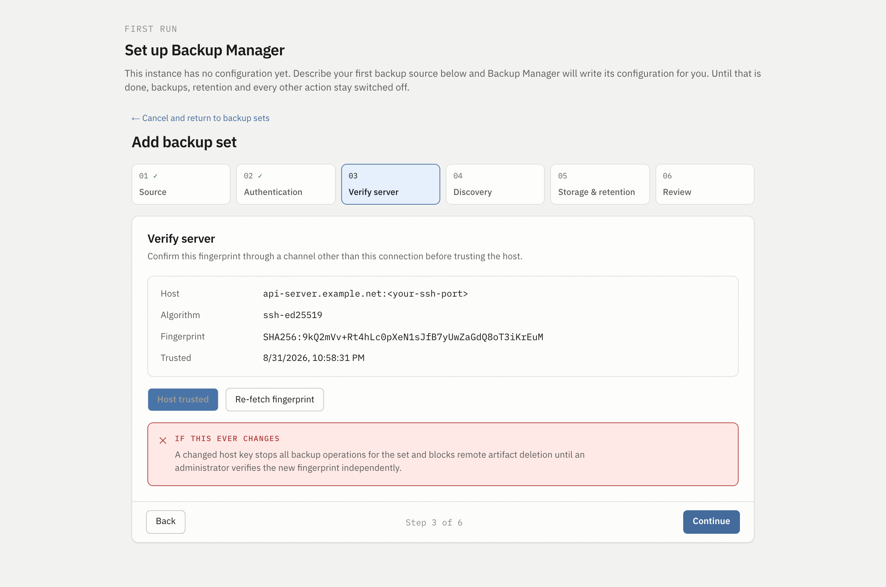
| Control | Example | What it does |
|---|---|---|
| Trust host | press once, after comparing | Captures the probed known_hosts line. On save it is written to <config dir>/known_hosts.d/<source>_<set>_known_hosts and named by remote.known_hosts, and every later connection is checked against that file. This is the trust anchor, not display text. |
| Re-fetch fingerprint | after a legitimate server rebuild | Re-runs the probe. It does not grant trust; you still have to press Trust host, and if the key has changed the button becomes a destructive-confirm variant reading “Trust new fingerprint”. |
If this fingerprint ever changes, the backup set halts. Backup operations for it stop, and remote artifact deletion is blocked, until an administrator verifies the new fingerprint independently. That is the intended behaviour and it is why this step exists: the alternative is a manager that keeps deleting remote originals while talking to a server that is no longer yours.
Host-key verification cannot be switched off. A configuration that names a known_hosts value which would disable it is refused outright at load time, so there is no accepted spelling of “skip this”.
Step 4: Backup discovery
Where artifacts appear, which of them are yours, and how the manager knows one has finished being written.
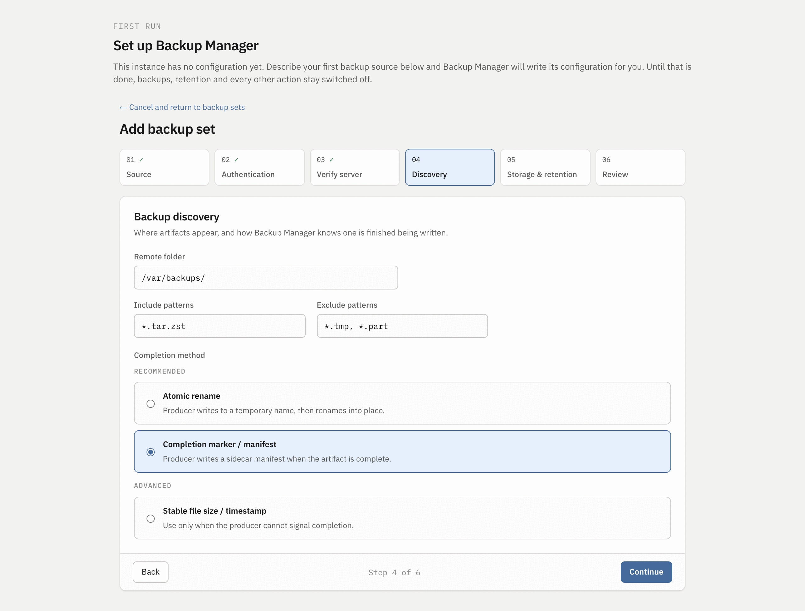
| Field | Example | What the entry does |
|---|---|---|
| Remote folder | /var/backups/ | Becomes remote_path. This is the directory on the VPS that gets emptied. Every file in it that matches an include pattern and passes the completion check is pulled and then deleted from the VPS, so point it at a directory whose only job is holding finished backups, never at a working directory. |
| Include patterns | *.tar.zst | Becomes include, a list. Comma-separated here, split and trimmed on save. A file that matches nothing is invisible to the manager: it is never pulled and never deleted, which is the safe direction but also means a producer that changes its output extension quietly stops being backed up. |
| Exclude patterns | none to give | Display only. Nothing you type here is sent or stored, because the configuration schema has no exclude field. Narrow your includes instead. |
Completion method, and why it is the consequential choice on this step
A backup artifact that is still being written looks exactly like one that is finished. Getting this wrong means pulling a half-written archive, verifying the half, and then deleting the remote original. The three answers are not equivalent.
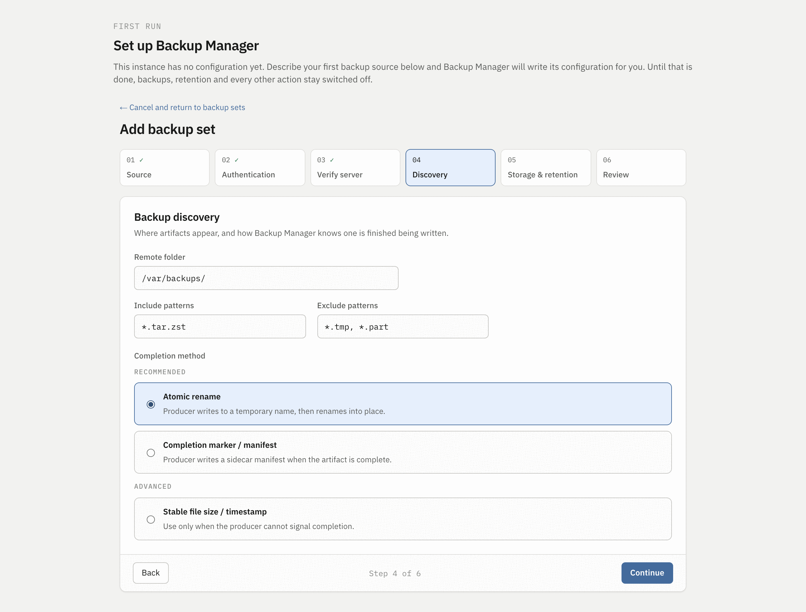
| Choice | Written as | What it does |
|---|---|---|
| Atomic rename | completion.strategy: rename |
Your producer writes to a temporary name and renames into place when it is done. The rename is the completion signal, and on a POSIX filesystem it is atomic, so a partially written file is never visible under a name the manager will match. Pick this if you control the producer. |
| Completion marker / manifest | completion.strategy: marker |
Your producer writes a sidecar file once the artifact is complete. The manager waits for the marker, so an artifact with no marker is never touched, however old it is. Equally safe, and the right answer when your producer cannot rename. |
| Stable file size / timestamp | completion.strategy: stable |
The manager infers completion from a size and mtime that have stopped moving. This is a heuristic, and it is the only strategy that can be wrong. A producer that stalls mid-write for long enough looks finished. |
Two different timers apply, and conflating them is the mistake to avoid. stable_for answers “has this looked done long enough to start processing it”, and the wizard sends one hour for it. A separate delete_safety_delay, defaulting to one hour and applied only to this strategy, answers a different and more dangerous question: “has it looked done long enough to destroy the only other copy”. The remote delete waits for that second timer on top of everything else.
The other two strategies carry a producer-provided completion signal, so they do not need it.
One field on this step has no control at all: stale_after, which decides when a backup set with no fresh artifact starts reporting as stale, is set to 48 hours for every set the wizard creates. Change it by editing config.yaml if your producer runs less often than that.
Step 5: Storage, retention and validation
This step has the most controls and the fewest of them are connected. Read the table before you spend time on it.
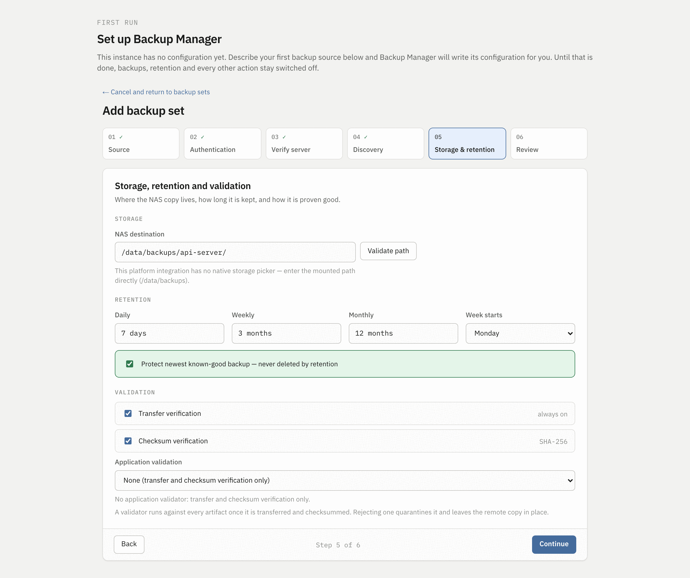
| Control | Example | What the entry does |
|---|---|---|
| NAS destination | /data/backups/api-server/ | Becomes local_path. This is a path inside the container, not on the NAS filesystem. The Compose file mounts your NAS backup share at /data/backups, so this example lands at <your BACKUP_DIR>/api-server/ on the NAS. Give each backup set its own subdirectory: this path also becomes the containment root that the local prune refuses to delete outside of. |
| Validate path | none to give | On a platform with no native storage picker the button is labelled this way rather than pretending to offer a browser the integration does not have. The hint below the field names the mounted path for you. |
| Daily / Weekly / Monthly / Week starts | none to give | Display only. Nothing you type or select here is sent. They show the product's defaults, and the defaults are what you get. See below for what actually governs deletion. |
| Protect newest known-good backup | none to give | Display only, and on by default in the written configuration anyway. The protection is real; this checkbox is not the thing that turns it on. |
| Transfer verification | none to give | Display only, and correctly labelled “always on”. It cannot be switched off. |
| Checksum verification · SHA-256 | none to give | Display only, and the configuration is written with hashing off. That is a deliberate choice, not an oversight: see the note below. |
| Application validation | None, or an id from the list | Really sent, as validation.validator_id. The list is the backend's own registered catalogue, and the option labels are the ids themselves because an id is what ends up in config.yaml. A validator runs against every artifact after transfer and checksum, and rejecting one quarantines the artifact and leaves the remote copy in place, which is the whole reason to use one. |
Comparing a local hash against a remote one requires the remote to compute a hash, and against the chrooted, shell-less, forced-internal-sftp account the project's own setup guide recommends, that is not possible at all. Turning hashing on against that account shape does not make verification stronger, it fails every artifact at the verification stage, every time. So a wizard-created backup set is written with validation.hash: "", meaning transfer verification alone, which is the honest posture when hash capability is absent.
If your SFTP account is not hardened that way and does support hashing, set validation.hash: sha256 by hand in config.yaml.
What actually decides deletion
Retention is a single global policy for the whole configuration, not a per-backup-set setting, and it governs deletion of the NAS copies. It is unrelated to the remote delete, which is gated by the lifecycle rule and happens as soon as a verified local copy is durable.
A wizard-created configuration is written with the default chain, three tiers:
| Tier | Buckets by | Window | What it keeps |
|---|---|---|---|
daily | day | 7 days | The newest good artifact in each of today and the six days before it. |
weekly | week | 3 months | The newest good artifact in each week, looking back over three calendar months. The window is counted in months, not weeks, which is why this tier needs its own window_unit. |
monthly | month | 12 months | The newest good artifact in each of the last twelve calendar months. |
Each bucket contributes at most one artifact, and what is kept is the union of every tier's selections plus the protected last-known-good. Anything the union does not claim is a delete candidate, including artifacts that fell in a gap between two tiers' windows rather than outside all of them. Tier order never changes which artifacts survive, only the order tier names appear in a verdict.
There is no spelling of “keep nothing” in the schema. Emptying the tier list does not disable retention, it reinstates the default daily/weekly/monthly policy, which is the fail-safe direction. Retention is turned off by not running a retention pass. And backup-manager retention previews the decisions without acting on them, which is the right way to check a chain edit before it deletes anything.
Step 6: Review, and Finish setup
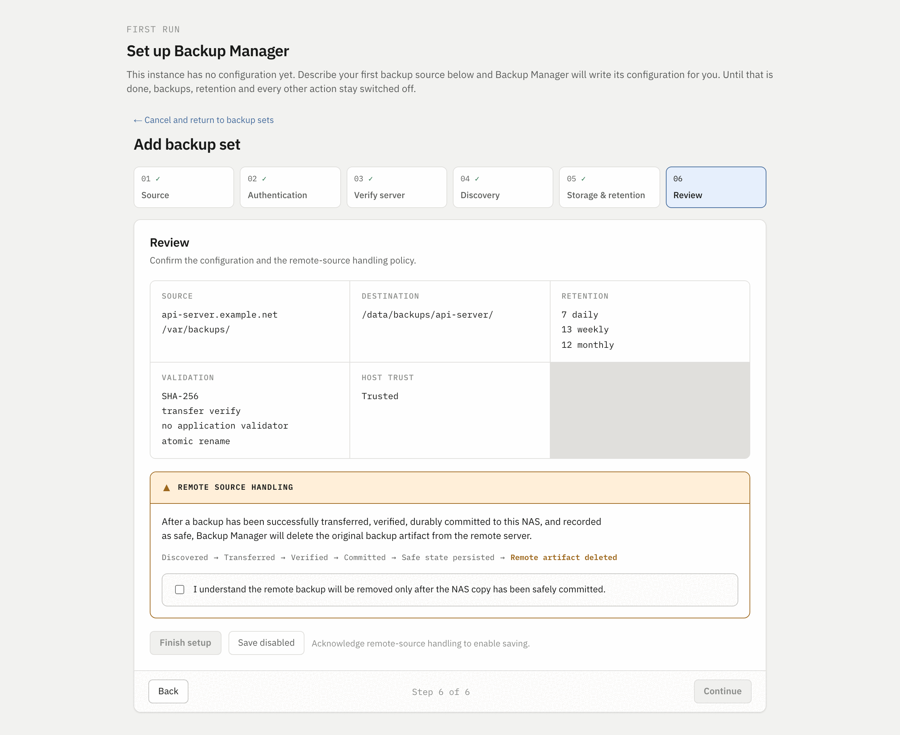
The summary grid reads back what will be written. Check three things in it specifically, because they are the three the earlier steps make easy to get wrong:
- Source shows the hostname and the remote folder. It does not show the port, so verify that separately after the write.
- Host trust must read “Trusted”. If it reads “Not yet trusted”, go back to step 3; saving will refuse.
- Validation lists the completion method you chose, spelled out, alongside the verification terms.
The panel below the summary is the product stating its own most dangerous behaviour before you agree to it, and the chain it draws is the real order of operations: discovered, transferred, verified, committed, safe state persisted, remote artifact deleted. The delete is last and the journal write is before it, so a crash in between leaves two copies rather than none.
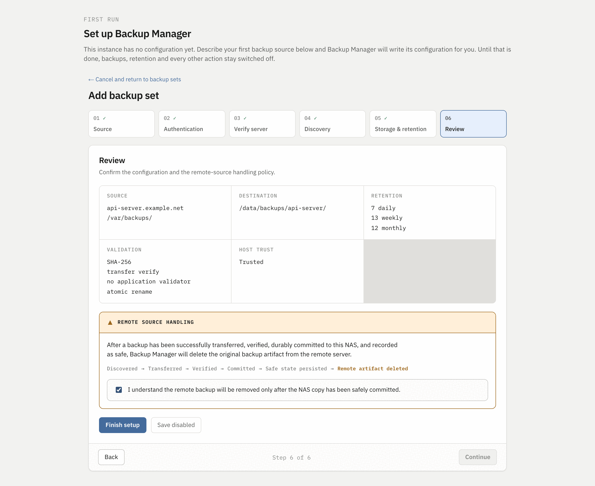
| Button | When to use it | What it does |
|---|---|---|
| Finish setup | the normal path | Writes the configuration and enables the backup set. The write is an exclusive create, not a rename over whatever is there, so if something else produced a config file in the meantime this refuses rather than destroying it. |
| Save disabled | when the remote side is not ready | Writes exactly the same configuration with disabled: true. The set is excluded from every processing cycle until you enable it, so nothing is pulled and nothing is deleted. Useful if you want the configuration in place before the producer starts writing. |
If a button is disabled, the sentence beside it names the reason: an un-imported key, an untrusted host, or the unticked acknowledgement each get their own message rather than a single generic one.
What lands on disk
Everything that can fail happens before anything is persisted: the request is validated, the key is resolved, the whole assembled configuration goes through the same validation a hand-edited file goes through at boot, the state directory is checked, and any chosen validator is resolved. Only then is the file created. A configuration the process refuses to finish is never the configuration left behind.
For the worked example, this is the file:
poll_interval: 1h0m0s
state:
database: /data/state/state.db
sources:
- id: api
backup_sets:
- id: api-server-nightly
remote:
type: sftp
host: api-server.example.net
port: 22 # whatever you typed on step 1
user: backup-agent
key_file: /etc/backup-manager/config/ssh_keys/6f2a1c92-7d40-4b18-9a6e-1e0c5f3b77aa
key:
file: /etc/backup-manager/config/ssh_keys/6f2a1c92-7d40-4b18-9a6e-1e0c5f3b77aa
env: ""
command: []
known_hosts: /etc/backup-manager/config/known_hosts.d/api_api-server-nightly_known_hosts
remote_path: /var/backups/
local_path: /data/backups/api-server/
include:
- '*.tar.zst'
completion:
strategy: rename
stable_for: 0s
delete_safety_delay: 0s
stale_after: 48h0m0s
disabled: false
validation:
hash: ""
validator_id: ""
command: null
revalidation:
interval: 0s
max_per_cycle: 0
hash: false
command: null
retention:
timezone: UTC
week_starts_on: monday
daily_days: 7
weekly_months: 3
monthly_months: 12
protect_last_known_good: true
alerts:
enabled: false
repeated_failure_threshold: 3Four things in that file are worth noticing, none of which any screen mentioned:
- Your backup set is grouped under a source called
api. The wizard has no concept of a source, so everything it creates lands under that one name. The set's real identity isapi/api-server-nightly. key_fileandkey.fileboth appear, holding the same path. The first is a deprecated alias kept in step with the second so an older binary can still read the file.- The retention numbers are written out, not left blank. Validation resolves the defaults in place before the file is marshalled, so 7/3/12, UTC and monday are frozen into your configuration rather than tracking whatever the product's defaults become later.
- Alerting is off.
alerts.enabled: falsemeans nothing notifies you about a stale backup, a repeated failure, a changed host key or critical storage pressure. Turn it on by hand if you want any of that.
What you get next
The configuration is durably on disk the moment Finish setup returns. The instance then tries to bring a real service up against it in the same process, so you do not have to restart a container you just installed, and on success you land in the application.
The screenshot below is the dashboard as the development mock renders it, which means five backup sets, an active transfer, two quarantined artifacts and a host-key alert. A real instance one second after first run has one backup set and no artifacts at all. Nothing in the numbers below is a claim about your deployment. It is here for the shape: the section navigation, the platform named in the footer, and where things live.
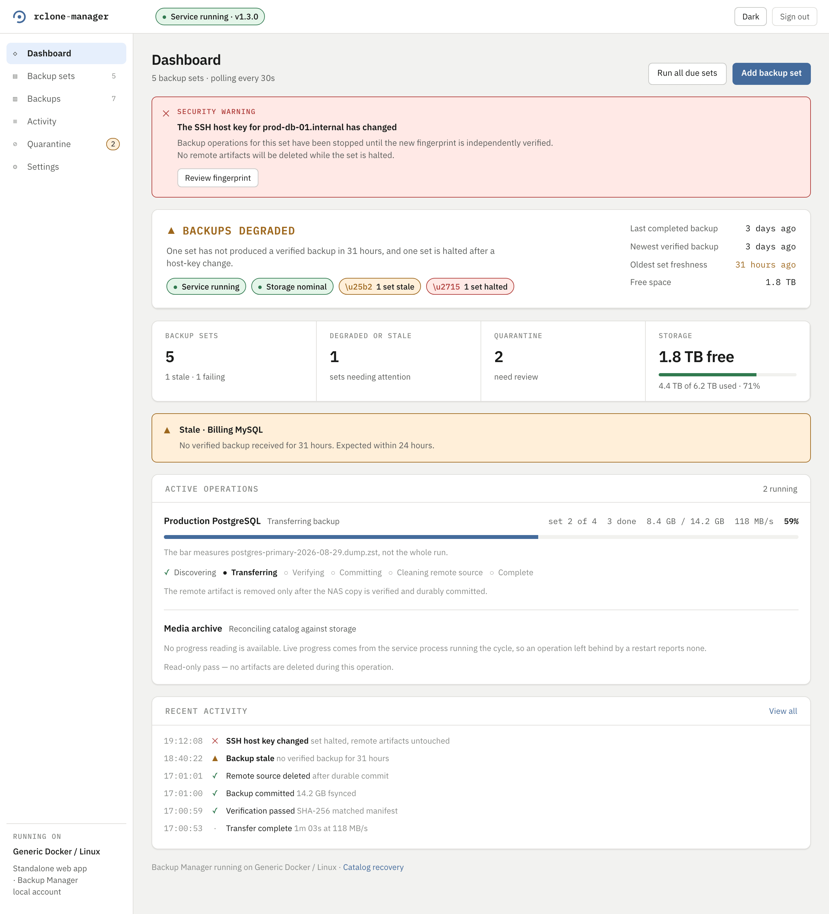
\u2715 and \u25b2 strings in the status chips are #257.What to actually do first on a real instance:
- Check the port. Open Settings or read
config.yamland confirmremote.portis the number you meant, given that a non-numeric entry became 22. - Run one cycle by hand before trusting the schedule, and watch it reach the end. The default poll interval a wizard-written configuration gets is one hour.
- Watch the first artifact all the way through to remote deletion. That is the first moment the whole rule is exercised, and it is the cheapest time to find out that the include pattern matched nothing.
Coming back later
Once an administrator exists, the enrolment page is closed and this is what the address answers with.
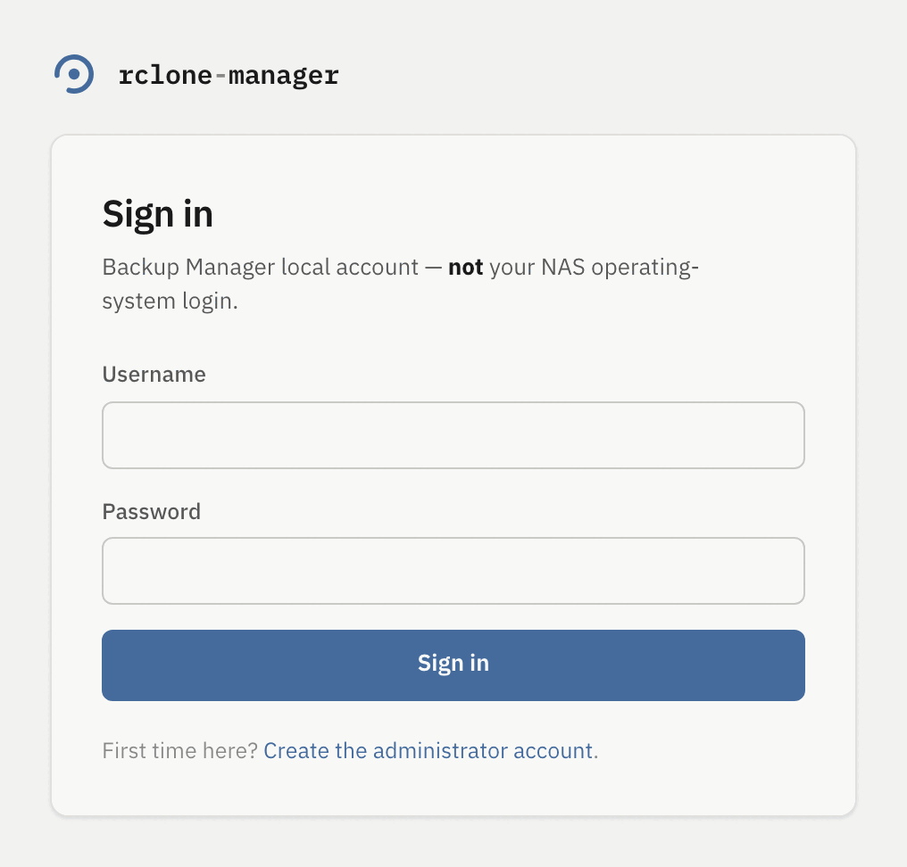
The “First time here? Create the administrator account” link at the bottom goes to the enrolment page without a token. That is the right destination on a genuinely fresh install reached without the printed link, and on an instance that already has an administrator it will fail, correctly, with the message discussed above.
Adding the second VPS
First run configures exactly one backup set, because the point of it is to turn an unconfigured instance into a serviceable one, not to finish the whole deployment. The second VPS is an ordinary addition afterwards.
Go to Backup sets, press Add backup set, and you get the same six steps you have just walked, with two differences:
- The Cancel control works this time, because there is now a backup-sets list to return to.
- There is a third button on step 6, Save, enable & run, which starts a cycle immediately. If the save succeeds but the run does not start, the page says so and stays put rather than navigating away and letting you believe a backup is running.
Give the second set its own local_path, for example /data/backups/cicd/. Two backup sets sharing a destination directory would put two prune containment roots on the same tree, which is not a configuration worth having.
Both sets will land under the same api source, so their identities become api/api-server-nightly and api/<your second set>. Retention stays a single global policy applied to both.
Screens not pictured here
Three states on this path exist in the product and are not on this page, because the development mock cannot produce them. They are described rather than quietly omitted.
- The enrolment failure from #274. The fixture's enrolment call always succeeds, so the error banner cannot be reached locally. Its text is quoted verbatim in the callout on screen 1.
- “Configuration saved”, the restart-required screen. Reached when the configuration is written but the instance cannot start serving it in the same process. It reads: “Your configuration has been written and is safe. This instance could not start serving it without a restart, so restart the Backup Manager container or service and open this page again. You do not need to enter any of it a second time.” The fixture always reports that activation succeeded, so this state is unreachable locally. If you see it, restart the container and sign back in; do not run the wizard again.
- The real post-setup dashboard. One backup set, no artifacts, nothing in the activity feed. See the warning on screen 8.
Both defects called out above are being fixed as this is written, so screens 1 and 2 are the two most likely to look different from these pictures. Nothing else on the path is under active change. Re-shoot rather than hand-editing a caption.
Re-shooting these
From a checkout with ui/shared's dependencies installed:
node docs/site/tools/capture-first-run.mjsIt starts the development server on a port it proved free, drives the whole flow, and overwrites every PNG in docs/site/screens/, printing one line per screen. It borrows Playwright from the checkout the repository's own e2e gate already maintains rather than adding a dependency back to ui/shared, so if it reports that it has nothing to borrow, run the gate once first. The script's header comment explains the two things that are not obvious: why the flow is driven against the fixture API rather than a real instance, and why one network route has to be stubbed for the application to consider itself signed in.